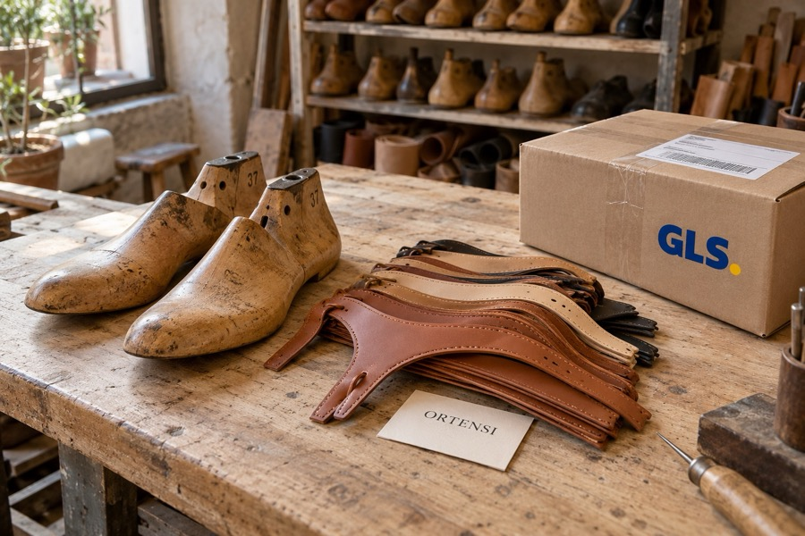
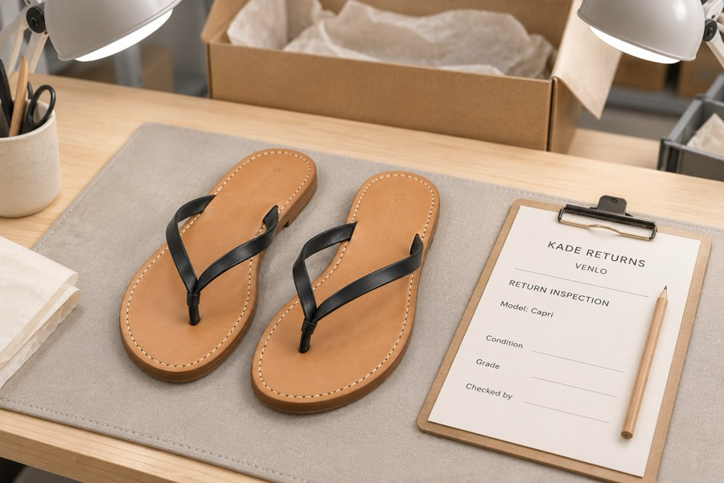

Straight from the makers
Ciabatta makes the Ultra Comfort flip-flops, loafers and socks, and ships them from Bergamo. Calzaturificio Ortensi, a family workshop in Porto Sant’Elpidio in Le Marche, makes the leather pairs and has no shop of its own. When you order, your order goes straight to the maker, who packs it and hands it to GLS.
That’s why we don’t keep a warehouse full of sizes: each pair leaves from the maker.

Delivery
Your order leaves Italy within 1–2 working days. The makers work Monday to Friday and close on Italian public holidays.
GLS delivers in 2–4 working days across Europe, and about a day longer to Finland, Sweden and Denmark. You’ll get a tracking link by email as soon as your parcel leaves the workshop. Delivery is always free.
Returns and refunds
- Ask for a return within 30 days of delivery by replying to your order email. Returns are free. Socks can only be returned unworn.
- We send you a prepaid DHL label. Pack the pair in its box and drop it at any DHL point.
- Your parcel goes to Kade Returns, our returns hub in Venlo in the Netherlands. It doesn’t travel back to Italy.
- Kade checks your pair, and we refund within 3 working days of their check. Card refunds can take a few more days to show on your statement; PayPal is usually the same day.

What happens to returned pairs
Every pair that comes back is checked by hand at Kade. Perfect pairs, unworn and in their box, go back on sale and are sent from Venlo to the next customer.
Pairs that aren’t perfect go back to the maker in Italy where they can.
Payments
Prices include VAT. Choose how you pay at checkout:
- CardVisa, Mastercard and American Express.
- PayPalPay with your PayPal account.
- Pay laterWe send an invoice, due within 14 days.
Questions
Write to hello@ciabattaclub.example. Your first reply usually comes from Mia, our AI assistant, and a person on our team checks every answer before it goes out.